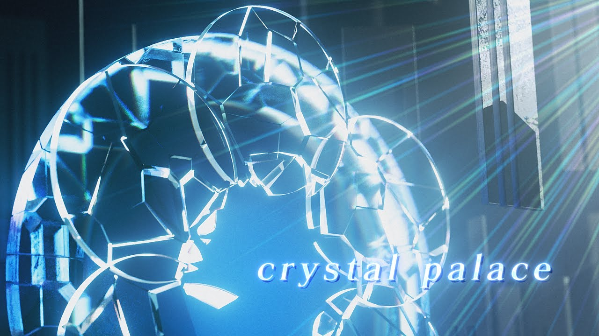
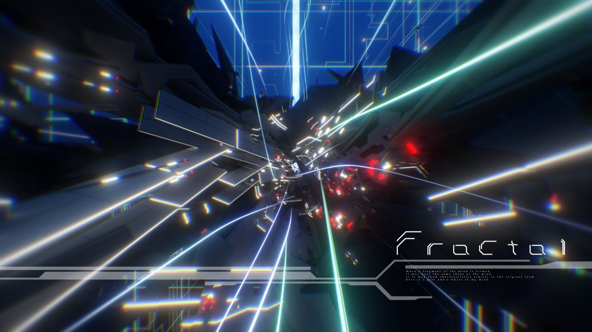
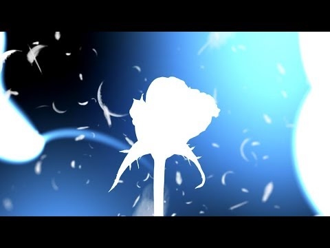
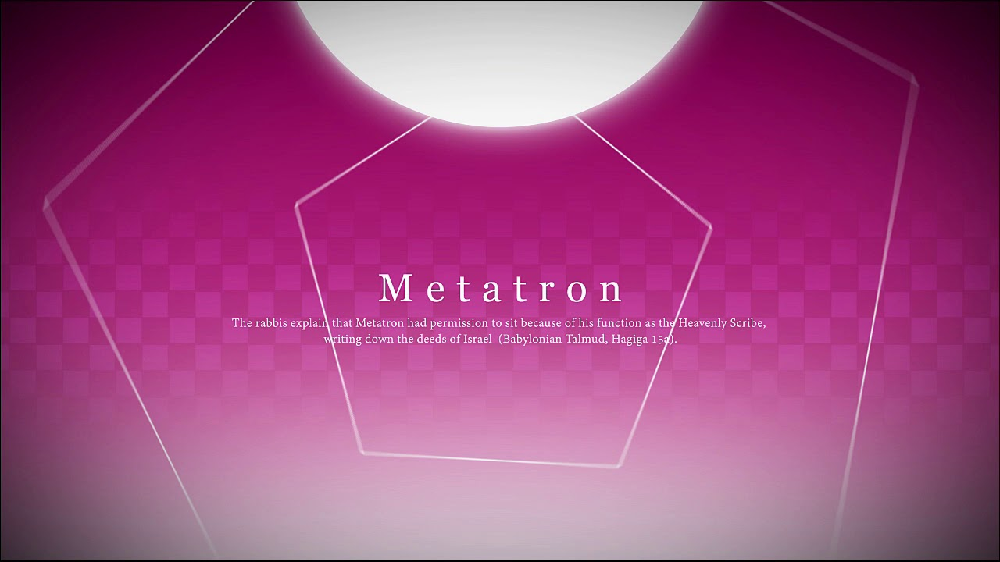
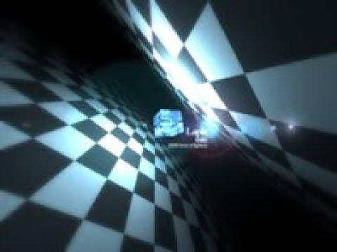

Crystal palace

GENRE - TRANCE CORE -
TITLE - Crystal palace -
Date - 2021/3/13
BGA by Nyu。久し振りにイベント外でBMSを作りたかった。
SHIKIトランスコアという感じで、シンセリフ的なのものは無くて何がトランスコアなんだという感じですが、
BPM180ぐらいで4つ打ちならそれはトランスコア（概念）なんだよ！ ラストは音ゲー意識のピアノフレーズで音ゲー曲ということを主張しました。
全体的に譜面が難しいので他の曲で修行して出直してきて下さい。オレも出来ません。
・高画質BGA（beatoraja用ではない）
→【Down Load】（143MB）
Fractal

GENRE - TRANCE -
TITLE - Fractal -
Date - 2020/11/1
BGA by 140。BOFXVI参加作品。曲全部サビ、曲全部叩き所を目標に制作しました。
こういう譜面を２分間ずっと叩いていたい、という個人的な願望を叶えられて満足してます。
・beatoraja用高解像度BGA
→【Down Load】
Orfevre

GENRE - TRANCE -
TITLE - Orfevre -
Date - 2018/11/4
BGA by SHIKI。G2R2018参加作品。久し振りにBGA自作しました。
ラスサビの裏メロのストリングスがとても気に入ってます。
Metatron

GENRE - TRANCE CORE -
TITLE - METATRON -
Date - 2015/9/22
BGA by GLUON。BOFU2015参加作品。とても音ゲーらしい曲になったと思います。
自分でも何か音が微妙だなと思ってます。
Qliphoth
GENRE - Progressive Drum'n bass -
TITLE - qliphoth -
Date - 2011/9/25
BGA by Rev。BOF2011参加作品。
いつものメロディック路線とはやや趣を変えた怪しい感じのジャズドラムンベース。
シンセ的な音色を使っていないシックな構成の曲ですが、
地味にならないように各楽器を展開させてみました。
Babylon
GENRE - HARD RENAISSANCE -
TITLE - BABYLON -
Date - 2009/9/27
BGA by TOHRU MiTSUHASHi。BOF2009参加作品。
「スペードのK」をモチーフに、高速BPMにハードな リズムとシンセ階段、
メロディアスな乱打ピアノのボス曲的存在。譜面は高難易度になってます。
Lapis
